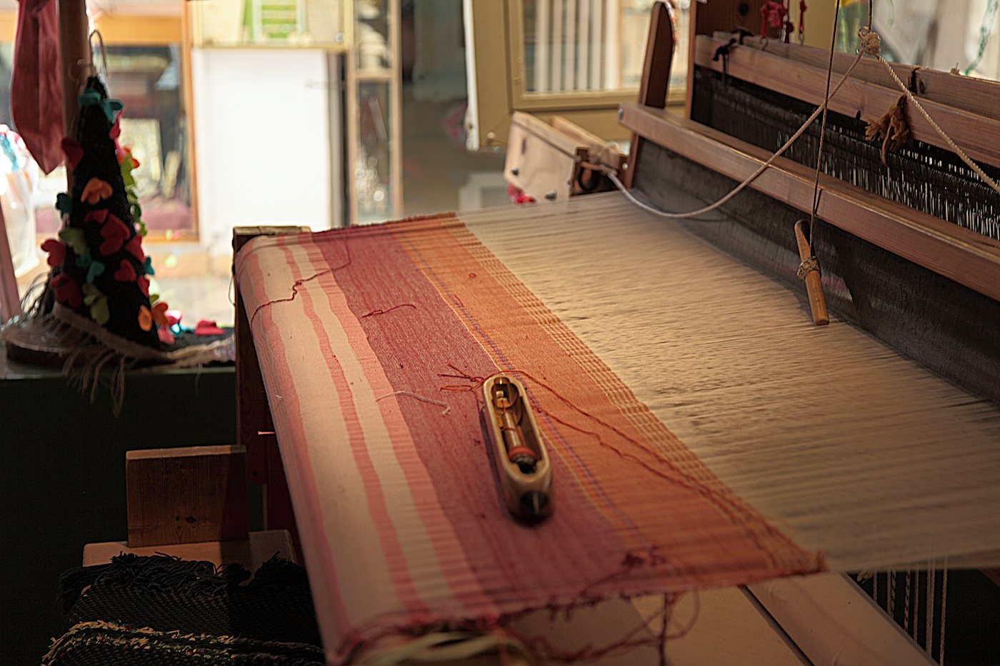

The Weaves · Shop
Handloom Banarasi sarees,
straight from the loom.
Every saree here is woven by hand in a Varanasi weaver's home. Most are one of a kind, and we'll show you the real piece on video before it ships.
- Handloom onlyWoven by hand in Varanasi, never on a powerloom.
- See it live firstA video call with the real piece before it ships.
- Insured shippingTracked delivery across India, and worldwide on request.
- Can't find it?Tell us what you want and we'll find it on the loom.
The Weaves
Woven by hand,
never by machine.
Every saree comes from a weaver's home in Varanasi, with no wholesalers in between. When you wear one, you carry weeks of someone's patience and a craft handed down from parent to child.
झीनी झीनी बीनी चदरिया“Finely, finely woven is this cloth” · Kabir, the weaver-poet of Banaras

- 01
Katan Silk
Pure mulberry silk, tightly twisted and heavy with zari. The bride's saree.
- 02
Organza
Sheer, crisp and luminous, with delicate floral buttis that catch the light.
- 03
Georgette
A fluid drape that's easy to wear, with Banarasi motifs for festive days.
- 04
Tussar
Wild silk with a natural golden sheen and a rich, earthy hand-feel.


- Silk MarkPurity assured
- Handloom MarkVerified hand-woven
- GI · Banarasi BrocadeWoven only in Varanasi
- Weaver's CardKnow whose hands made it
The motifs
Read a saree
the way a weaver does.
-
Butti बूटी
Small flowers or leaves scattered across the body of the saree. The smaller and closer they sit, the more hours on the loom.
See sarees with Butti → -
Jaal जाल
A net of vines and flowers that covers the whole saree, leaving almost no plain silk. Usually kept for the richest bridal pieces.
See sarees with Jaal → -
Bel बेल
A running creeper along the border or the pallu. It stands for continuity and growth, which is why it so often frames a bridal saree.
See sarees with Bel → -
Kalga कलगा
The paisley, shaped like a mango or a flame bending in the wind. Woven alone as a large motif, or in rows across the pallu.
See sarees with Kalga → -
Konia कोनिया
A motif tucked into the corner where the border meets the pallu. Small and easy to miss, and a sign of a careful weaver.
See sarees with Konia → -
Shikargah शिकारगाह
Hunting scenes of deer, horses and riders among trees. An old courtly design that only a few master weavers still take on.
See sarees with Shikargah →
Find your Banarasi
Which Banarasi
is yours?
Three quick choices, and we'll suggest where to start. Then send it to us and we'll show you real pieces on a video call.
Babu suggests
Katan silk with Kadwa brocade
Dense gold zari, a jaal or shikargah pallu, and a saree heavy enough to be handed down.
Send this to Babu on WhatsApp
“A machine can copy a pattern.
Only a weaver can give it a soul.”
At the loom

The language of the loom
Four words every
Banarasi lover knows.
- Kadwa
- Each motif woven separately by hand. Turn the saree over and there are no loose threads: the surest sign of a true handloom.
- Meenakari
- Coloured silk threads set into the gold like enamel on jewellery.
- Tanchoi
- Dense, layered patterns woven with several coloured wefts at once.
- Brocade
- Raised gold and silver zari motifs, the signature of Banaras for centuries.
Where they're woven
Every saree
has a neighbourhood.
Banarasi weaving lives in a handful of old mohallas, in homes where the loom sits in the front room and the whole family knows the craft. We buy straight from those homes.
Ask us on WhatsApp, and we'll introduce you to the weaver of your saree on a video call.
Madanpura
Near Dashashwamedh, the old heart of silk weaving, its narrow lanes full of the sound of looms.
View on map ↗Sarai Mohana
A riverside weavers' village in the north of the city, known for fine Katan and Kadwa work.
View on map ↗Lohta
On the western edge of Varanasi, where whole streets of families still weave at home.
View on map ↗Peeli Kothi
Close to the old city, a centre of the zari and brocade trade for generations.
View on map ↗
- 2 weeks
- for a light saree with simple buttis
- Months
- for a full Kadwa jaal bridal piece
- 1
- weaver, often helped by family, from first thread to last
Beyond silk
The other crafts of Kashi
Banaras has several crafts protected by a GI tag. We're putting together a small gifting collection with the families who make them.
-
Gulabi Meenakari
Pink enamel set into silver and gold by hand. A rare art, kept alive by a few families.
Ask about it → -
Lacquerware toys
Wooden tops, rattles and figures, turned on a lathe and coloured with lac.
Ask about it → -
Glass beads
Hand-wound glass beads in every colour, made in Varanasi's bead workshops.
Ask about it → -
Soft-stone jali
Lattice screens and boxes carved from a single piece of soft stone.
Ask about it →
The Journal
Know your Banarasi.
What our weavers and hosts would tell you over a cup of chai.
Buying guidePure silk or synthetic? How to tell
Feel it first: pure silk warms to the touch and has a soft, dry rustle. Look for the Silk Mark tag. Then the thread burn test: real silk smells like burnt hair and leaves a fine ash that crumbles, while polyester melts into a hard bead and smells of plastic.
CareCaring for a heritage handloom
Dry-clean only. Wrap it in soft muslin, never plastic. Refold it along new lines every few months so the zari doesn't crack, and keep it away from perfume and direct sun. Looked after this way, a Banarasi saree can be handed down to the next generation.
BridalCommissioning a bridal saree
A made-to-order bridal Katan usually needs several weeks on the loom. Share your colours, motifs and date with us, and we'll sit with the weaver to design it with you over video call.
Say Namaste
Talk to Babu.
Whether it's a bridal saree, a week in Kashi or a jar from the farm, write to us. Someone from our family in Banaras will reply.
- WhatsApp+91 92609 84531
- Call+91 92609 84531